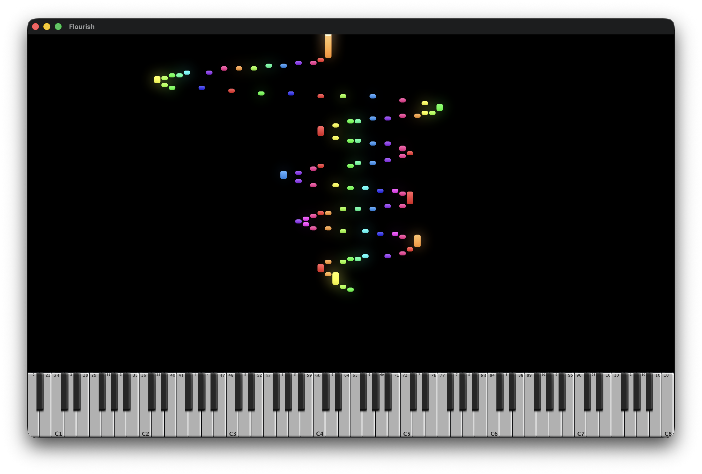

Records
Tracking, mixing, and mastering for albums, singles, and film. Pro Tools, REAPER, and Logic, with surround and immersive work when a project asks for it.
Rhymes with fire · Nine Grammys · Still building
From 1986 through 2007 I engineered nearly every Asleep At The Wheel record. That work brought home nine Grammys and a wall of platinum, and it taught me the thing this whole site runs on: the gear is only worth what it does for the take.
These days the bench looks different. I still cut records, and I still play — but most weeks I am writing the software I wished existed twenty years ago. Drum instruments you play instead of program. Loopers that behave on a stage. Tools built in the room where they get used.
See what I’m buildingTracking, mixing, and mastering for albums, singles, and film. Pro Tools, REAPER, and Logic, with surround and immersive work when a project asks for it.
C++ and JUCE for the plugins, Lua and JSFX inside REAPER. Every tool here exists because a session needed it and nothing on the shelf would do.
Multi-camera streaming, low-latency broadcast audio, and the automation that lets one person run a clean show without a crew.

Four drummers you play instead of program. Organic tempo, human placement, arrangement that follows the song instead of the grid.

Scene-based looping built for a stage. Every scene lands on the beat you asked for, every time, with no rescue click.

Live MIDI and audio turned into particles and notes on screen, in time, with no render step in between.
Recorded, edited, and programmed by hand — the same library composers have leaned on since the GigaStudio days. SFZ format, so any free player will load them. Use them on your own releases, commercial included.